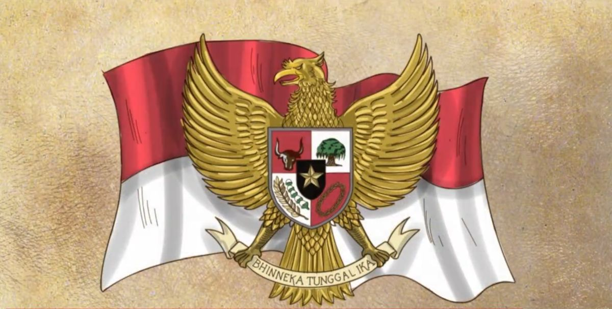

PANCASILA



Kedudukan Pancasila sebagai dasar negara yang memerlukan pengetahuan dan pemahaman merupakan hasil pemikiran, musyawarah dan mufakat yang dilakukan oleh tokoh-tokoh kunci pada masa perjuangan kemerdekaan.Pancasila, ada lima sila atau perintah yang harus diketahui. Lima Sila Pancasila pertama kali dibuat pada tanggal 1 Juni 1945 oleh Presiden Republik Indonesia, Soekarno.
Lima sila yang terkandung dalam sila Pancasila adalah Ketuhanan Yang Maha Esa, Kemanusiaan yang adil dan beradab, Persatuan Indonesia, Demokrasi yang berjiwa hikmat dalam refleksi/perwakilan, Keadilan sosial bagi seluruh rakyat Indonesia. Nilai-nilai pancasila merupakan pedoman normatif yang berlaku bagi seluruh kegiatan penyelenggaraan pemerintahan. Status Pancasila sebagai dasar negara Indonesia berarti bahwa semua peraturan pemerintah harus sesuai dengan Pancasila dan tidak boleh bertentangan dengannya.
1. Pancasila sebagai Dasar Negara
Status Pancasila sebagai dasar negara Indonesia disahkan dengan Inpres No. 12 Tahun 1968. Pancasila digunakan sebagai standar dasar/konstitusi negara. Hal itu sebagaimana tercantum dalam alinea keempat Undang-Undang Dasar Negara Republik Indonesia Tahun 1945. Pancasila sebagai dasar negara mengandung arti bahwa Pancasila merupakan pedoman bagi pelaksanaan segala peraturan perundang-undangan dan norma kenegaraan.
2. Pancasila sebagai Pandangan Hidup Negara Indonesia
Pancasila berperan sebagai pandangan hidup bangsa Indonesia. Dasar Pancasila bagi penyelenggaraan kehidupan bernegara adalah kedudukan Pancasila sebagai pandangan hidup masyarakat. Peranan pancasila sebagai pedoman hidup bangsa adalah mempersatukan dan membimbing masyarakat Indonesia yang majemuk (bhineka) untuk mencapai kesejahteraan dan kebahagiaan.
3. Pancasila sebagai sumber dari segala sumber hukum
Pancasila merupakan sumber dari segala sumber hukum yang berlaku di Indonesia. Semua hukum harus diatur oleh dan bersumber dari Pancasila. Kedudukan pancasila sebagai dasar negara, terutama sebagai sumber dari segala sumber hukum, terdapat dalam dasar hukum yaitu ketetapan MPR No. V/MPR/1973 dan Ketetapan MPR No. IX/MPR/1978. Dasar hukum tersebut menegaskan bahwa kedudukan Pancasila sebagai dasar negara berfungsi sebagai sumber dari segala sumber hukum atau tatanan hukum yang ada di Indonesia. Sementara itu, Ketetapan MPR No. III/MPR/2000, menyatakan bahwa Pancasila adalah sumber konstitusi negara.
4. Pancasila sebagai Sumber Cita-cita dan Tujuan Nasional
Pancasila sebagai dasar negara merupakan tujuan dan cita-cita bangsa Indonesia. Sebagai bangsa Indonesia, mereka harus beriman kepada Tuhan Yang Maha Esa, kemanusiaan yang tinggi, persatuan, kebijaksanaan dan keadilan sosial. Salah satu ciri bangsa Indonesia adalah gagasan, cita-cita, tujuan, dan tekad untuk hidup bersama dalam negara kesatuan Republik Indonesia. Prinsip kewarganegaraan berasal dari Pancasila sebagai prinsip persatuan dan kesatuan bangsa Indonesia.
5. Pancasila sebagai Perjanjian Luhur
Pancasila sebagai Perjanjian Luhur, artinya Pancasila harus dipertahankan selamanya. Kesepakatan hukum tersebut dilaksanakan pada tanggal 18 Agustus 1945, ketika PPKI (Panitia Kemerdekaan Indonesia) membentuk dasar konstitusional negara Pancasila dan Pembukaan 6 UUD 1945. Lahirnya Pancasila sebagai jiwa bangsa Indonesia bertepatan dengan dasar negara Indonesia. Pancasila adalah jiwa bangsa, yang harus diwujudkan dalam setiap lembaga atau organisasi dan orang di Indonesia. Pancasila sebagai jiwa bangsa mengandung arti bahwa Pancasila memberikan ciri khas tersendiri bagi bangsa Indonesia dan membedakannya dengan bangsa lain.
6. Pancasila sebagai kepribadian bangsa Indonesia
Kepribadian bangsa Indonesia sangat penting dan harus juga menjadi identitas bangsa Indonesia. Oleh karena itu, Pancasila harus diwujudkan dalam diri setiap individu bangsa Indonesia. Nilai-nilai pancasila berperan penting dalam membentuk kepribadian bangsa Indonesia. Membuka ciri khas bangsa Indonesia terhadap segala perubahan di dalam dan di luar negeri, tanpa meninggalkan budaya asli bangsa Indonesia itu sendiri.
7. Pancasila sebagai ideologi bangsa Indonesia
Pancasila sebagai ideologi bangsa Indonesia adalah kumpulan gagasan/gagasan yang mempunyai nilai dan kebenaran di kalangan rakyat Indonesia dan misalnya.
8. Pancasila sebagai Jiwa Bangsa Indonesia
Pancasila memiliki kedudukan sebagai dasar negara dan berperan sebagai jiwa dari bangsa Indonesia. Lahirnya Pancasila sebagai jiwa bangsa Indonesia bersamaan dengan berdirinya bangsa Indonesia.
Pancasila merupakan jiwa bangsa yang harus diwujudkan dalam setiap lembaga atau organisasi dan insan yang ada di Indonesia. Pancasila sebagai jiwa bangsa, berarti Pancasila memberikan ciri khas tersendiri bagi bangsa Indonesia dan membedakannya dengan bangsa lain.